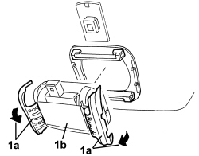

5050B64 RAIN SENSOR ELECTRONIC UNIT - R.R
- Path
- Procedures > 50 AUXILIARY UNITS > 5050 SCREEN WASHERS AND HEADLAMP WASH/WIPE > 5050B WINDSCREEN WASH/WIPE > 5050B64 RAIN SENSOR ELECTRONIC UNIT - R.R
- Kind
- repair procedure (removal / refitting; the operation number is the code)
- Applies to
- all engines; all production periods
- Interactive page
- https://sloeber94.github.io/elrnDB-aBrrSpdr/en/#/946002308
Applies to: all engines; all production periods
 Removing
Removing
 Refitting
RefittingOp. 7065C60 INTERIOR REAR VIEW MIRROR FOR VERSIONS WITH RAIN/DUSK SENSOR - R.R.
1. Release the retainers (1a) and remove rain sensor (1b).

Applies to: all engines; all production periods
Refitting
Removing- Check that the rain sensor is not damaged.
- Avoid touching the sensitive surface of the sensor.
- Clean the housing for the sensor in the windscreen thoroughly. Use a degreasing product.
- Place the rain sensor in position and attach the retainers.
Op. 7065C60 INTERIOR REAR VIEW MIRROR FOR VERSIONS WITH RAIN/DUSK SENSOR - R.R.